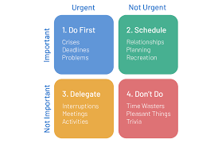
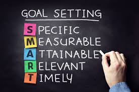
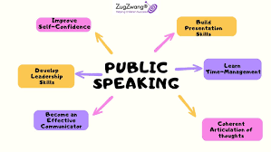
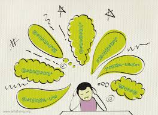

← Back to Projects
My Personal Growth Journey
Time Management Matrix
This exercise made me realize how much time I had unknowingly been spending on distractions that didn’t serve my goals. The matrix helped me visualize my priorities better. Since then, I've been more conscious about investing time in personal growth activities rather than reacting to urgency. It’s made a real difference in my daily productivity and sense of control.

I found this session eye-opening. It helped me identify and eliminate unproductive patterns.
Goal Setting
Goal setting no longer feels like a task for me; it feels like planning my success. Through this session, I learned how essential it is to set goals that truly resonate with me. I started breaking larger goals into smaller steps, and that made them more manageable. Every small win now feels like a powerful motivator.

This session inspired me to chase goals with more clarity and focus.
Circle of Control
Understanding the Circle of Control changed the way I deal with stress. I now try to differentiate between what I can control and what I must let go of. This shift has made me more relaxed and centered. I focus my attention on my reactions and responsibilities instead of worrying about things I cannot influence.

Letting go of what I can’t control helped me feel more empowered and at peace.
Extempore Speaking
Initially, extempore speaking made me nervous, but gradually I began to enjoy it. I learned how to organize my thoughts quickly and express them clearly. It boosted my confidence, not just in speaking but also in thinking on my feet. Now, I look forward to these moments as opportunities to grow.

This activity gave me the courage to express myself spontaneously and clearly.
Overcoming Meditation Obstacles
My meditation journey taught me the value of patience and persistence. I learned that thoughts are natural, and it's okay to have them. With time, I became more aware of my emotions and reactions. It’s made me calmer and more connected with myself. Meditation is now a cherished part of my daily routine.

Starting small really worked for me. Consistency brought the calm I was seeking.
Strategies for Inner Peace
Inner peace isn’t a destination, it’s a practice. I discovered the power of routines like journaling and gratitude reflection. Whenever life feels overwhelming, I take a pause, reconnect with myself, and ground my thoughts. These strategies have helped me stay calm, resilient, and more emotionally aware.
I’ve felt more centered since adopting these peaceful practices. They truly make a difference.
Group Discussion
Participating in group discussions helped me enhance my communication and active listening skills. I learned how to articulate my ideas clearly while respecting different perspectives. It was a great opportunity to collaborate, think critically, and grow as a team player. Over time, I became more confident in sharing my thoughts constructively.
I discovered the power of teamwork and respectful dialogue through these discussions.
Movie Takeaways - Big Hero 6
Big Hero 6 was more than just a movie—it felt like a story I could see myself in. The emotional resilience of Hiro, the selflessness of Tadashi, and the warmth of Baymax reminded me how love, loss, and friendship shape who we become. It inspired me to turn pain into purpose and use creativity to solve problems with compassion.
This movie reminded me that healing and growth can happen side by side. It truly moved me.
← Back to Projects